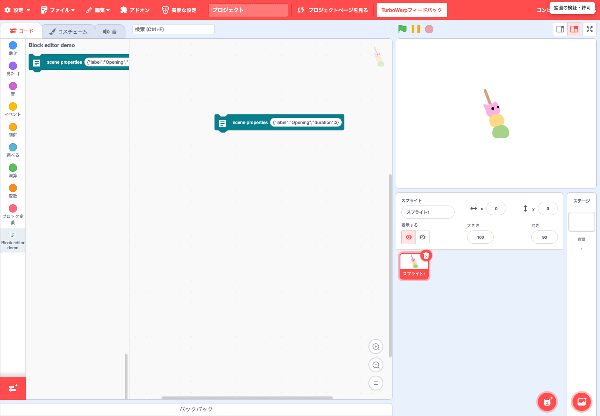
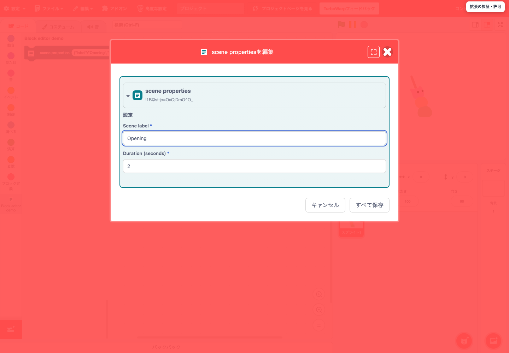
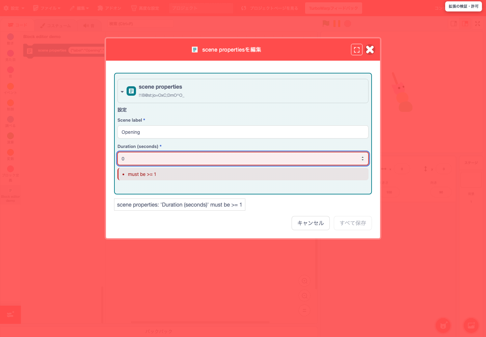
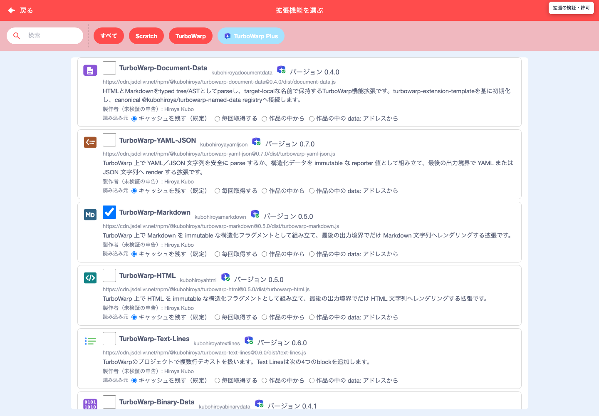
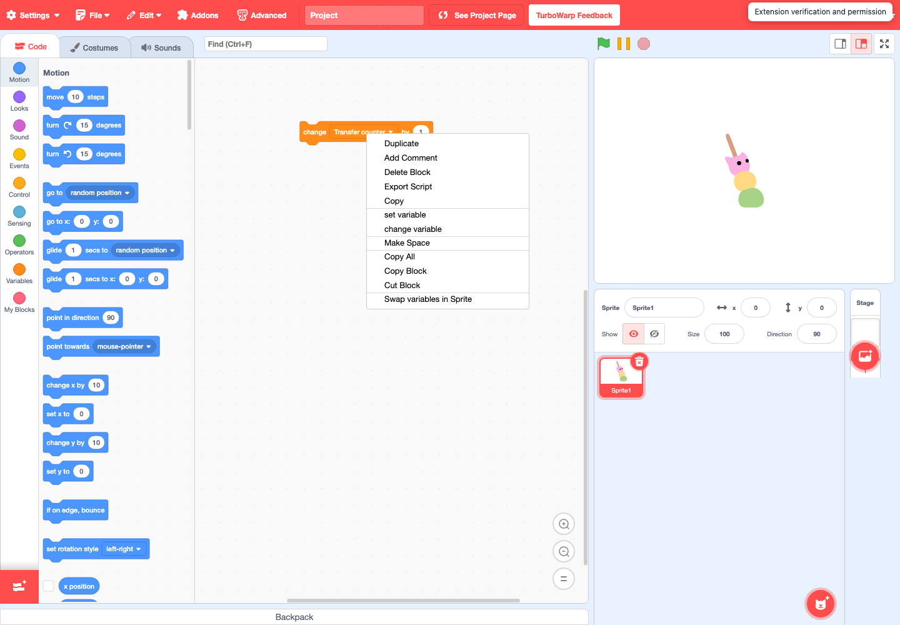
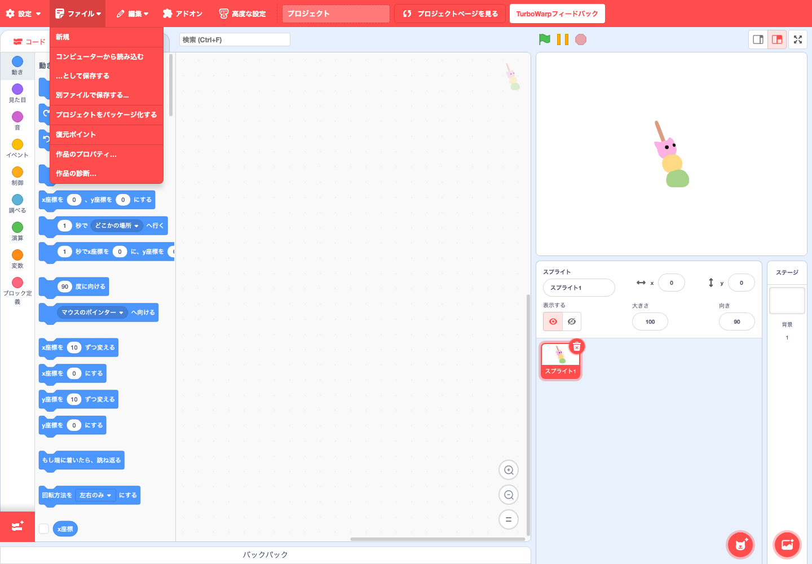
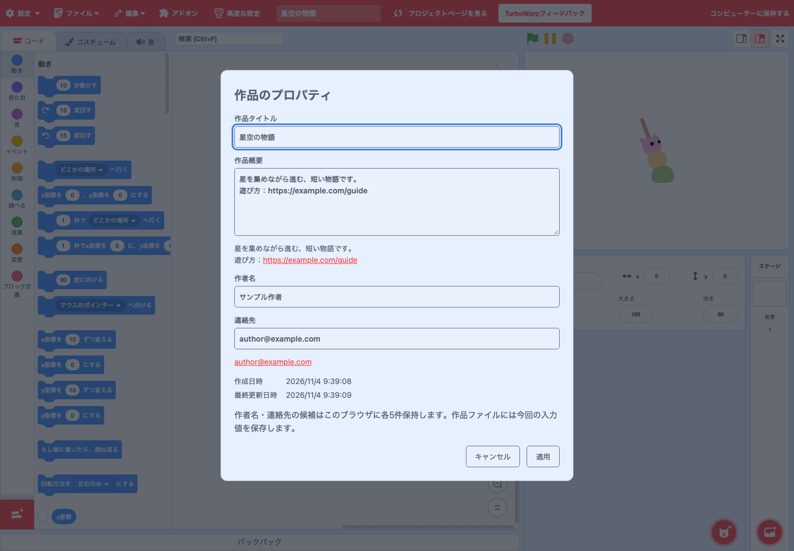

機能ガイド · 2026年11月4日更新
標準のTurboWarpから
何が増える？
ブロックに入れる複雑なデータをフォームで編集する。作品で使う機能拡張の内容・実行方法・保存方法を確認する。作品の概要や作者を保存し、読み込みの診断を見る。対応する作品では、文書やスクリプトも扱えます。
比較対象は TurboWarpの標準エディターです。Scratchとの比較ではありません。高速実行、アドオン、カスタム拡張のURL読込、標準Packagerなど、TurboWarpが元から備える機能は追加機能に数えていません。
1. 追加機能の一覧
このガイドの機能は通常の起動URLのまま使えます。作品情報と診断は追加拡張なしで利用できます。フォームや文書の操作は、その機能を登録した拡張・作品がある場合にだけ現れます。標準ブロックすべてに専用フォームが付くわけではありません。作品情報とPlusローダーの無効化設定は目的別の案内を参照してください。
| 操作 | 標準TurboWarp | このEditorで増えること | 利用条件 |
|---|---|---|---|
| ブロックの入力 | ブロック上の入力欄・メニュー | 拡張が定義したフォーム、入力検証、入れ子の一括編集 | 通常起動 対応拡張 |
| 拡張の追加 | 標準一覧・カスタム拡張 | TurboWarp Plusカタログ、依存拡張の選択、読込・保存方法の指定。通信の失敗なら同じ選択のままやり直せる | 通常起動 追加設定なし |
| 作品を開く際の確認 | カスタム拡張の実行確認 | Plus拡張と通常のカスタム拡張を同じ画面で確認。取得元・SHA-256・実行条件を表示 | 通常起動 確認対象の拡張を含む作品 |
| 拡張の保存 | 主にURL参照。data URLも扱える | 4つの保存形式を選択し、内容のハッシュと実行条件を作品と一緒に保持。キャッシュを許す形式は、再読込後もブラウザーに残る | 通常起動 Plus形式の拡張 |
| 文書の編集 | この文書編集UIはない | 対応文書のYAML/JSON原文、ブロック表現、所有拡張による検証・変換 | 通常起動 対応する文書提供元 |
| スクリプト・ステージの転送 | 標準のバックパック等 | .blocks3 / .stage3、ウィンドウ間コピー・貼り付け | 通常起動 追加設定なし |
| 編集プレビュー・ステージ操作 | 標準の実行・停止・表示操作 | 拡張が登録する編集プレビュー、操作ボタン、操作ドックの接続 | 作品依存 対応拡張が提供する場合 |
| 単一HTMLの出力 | 標準Packager | Plus形式の拡張コードと実行条件を引き継ぐ出力経路 | 通常起動 Plus形式の作品 |
| 作品情報の編集 | 作品タイトルの編集 | Project Propertiesで概要・作者・連絡先も編集し、日時とともにSB3へ保存。作者と連絡先の入力履歴各5件 | 通常起動 追加拡張なし |
| 読み込みの診断 | 読み込み時の確認・エラー表示 | Project Diagnosticsで検証・実行許可・読み込み・再試行・失敗の記録を確認・コピー | 通常起動 Plus拡張の詳細はLoaderが報告する場合 |
2. ブロックのデータをフォームで編集する
たとえば「シーンの名前」「表示時間」「複数の設定」を1つのJSON文字列で持つ拡張では、文字列を手で直す代わりに、項目ごとのフォームを使えます。拡張が編集定義を登録すると、ワークスペースの対応ブロックのアイコンが「ブロックを編集」ボタンになります。

- 対応ブロックをコード領域に置き、ブロックのアイコンを押します。
- フォームで名前や数値を変更します。表示名・色・項目の意味は拡張が定義します。
- 「すべて保存」で下書きをブロックへ反映します。「キャンセル」または閉じる操作では下書きを反映しません。
- 作品ファイルを残すには、その後に通常の「ファイル」からSB3を保存します。

入力の誤りを、その場で見つける
拡張のSchemaや検証処理に従い、必須項目・値の範囲などを確かめます。このサンプルの表示時間は1〜60秒です。0を入力するとエラーを示し、保存できなくなります。検証の内容は各拡張によって異なります。

入れ子・固定入力・Undo
対応する定義があれば、親子のブロックを同じ編集セッションで扱い、数値・文字列・メニューなどの固定入力も専用の欄で編集できます。保存した変更はBlocklyのUndoにまとめられます。定義のないブロックや動的な計算式を、勝手に編集可能なデータへ置き換える機能ではありません。
変更・検証・取消
ブロックへ反映／Undo
SB3を手元へ
拡張作者向けの入口とサンプルはフォーム型ブロックエディターの仕様にあります。
3. 拡張を選び、実行する条件を確認する
追加するとき：TurboWarp Plusの一覧
左下の「拡張機能を追加」→「TurboWarp Plus」を開きます。必要な拡張をチェックし、読込・保存方法を一括または個別に選んで「追加」を押します。必要な依存拡張も選ばれます。追加画面は通常の起動URLで利用できます。

作品を開くとき：取得元と内容を確認
確認が必要な拡張を含む作品では、実行前に一覧を表示します。Plus形式と通常のカスタム拡張をまとめて確認し、動かすかどうか、サンドボックス内か外かを選びます。作品がサンドボックス外での実行を必要とし、その条件を許可しなければ、その作品は開きません。作者の指定がサンドボックス内なら、外での実行を選んでも内側で動きます。

カタログ掲載の拡張は標準TurboWarpのギャラリーと同様に扱い、追加後に別の承認画面を重ねません。SHA-256は「同じ内容か」を確かめる値で、作者の本人性やコードの安全性を証明する値ではありません。「サンドボックスなし」はエディター側の権限で動くため、内容と提供元を確認して選びます。
取得に失敗したとき
拡張コードの取得が通信の問題で失敗したときは、一覧に「もう一度試す」が出ます。押すと、直前に選んだ読込・保存方法のまま取得し直します。内容のハッシュが合わない、配信元にない（404）、承認しなかった、など繰り返しても結果が変わらない失敗では、理由のコードとメッセージだけを表示し、やり直しは勧めません。
標準の「カスタム拡張機能」は従来どおりの入口です。その画面からのURL追加を、Plusカタログへの登録や4形式の選択と同じ操作とは扱いません。
4. 拡張コードをどこに保存するか選ぶ
「どう実行するか」と「どこからコードを読むか」は別の設定です。Plus形式では、選んだ形式、検証するSHA-256、実行条件をSB3と一緒に保存できます。
| 形式 | 保存するもの・開くときの動作 | 向いている場面 |
|---|---|---|
| remote-non-cacheable | HTTPS URLを記録。開くたびに取得し、ブラウザーにコードのキャッシュを残さない。 | 配信元から毎回取得したい |
| remote-cacheable | URLを記録し、検証済みコードのキャッシュをそのブラウザーに保持してよいと指定。キャッシュはブラウザーのIndexedDBに入り、ページを読み直しても残る。開く人は保持を断れる。 | 再利用のためのキャッシュを許容する |
| embedded-file | コードをSB3内のファイルとして同梱。 | 作品とコードを1ファイルで渡したい |
| embedded-data | コードをdata URLとして作品文書に同梱。標準TurboWarpでも読める形式。 | data URLで渡す既存の仕組みを使いたい |
SB3：URL＋ハッシュ
内容を照合
SB3：コード＋ハッシュ
内容を照合
RemoteはURLが同じでも内容が変われば検証に失敗します。キャッシュを許す指定だけで、オフライン動作は保証されません。Embeddedでも、拡張が外部API・画像・モデル等を取得する場合は通信が必要です。標準TurboWarpでコードを読み込めても、このガイドのフォームや文書編集UIが追加されるわけではありません。
作品のURIとキャッシュの整理
HTTPSで配信されたEditorでPlus形式の拡張を初めて追加するか、Plus形式の作品を初めて保存すると、その作品にURIを付けて作品と一緒に保存します。URIは「このEditorの配信元／turbowarp-plus-projects／…／UUID.sb3」の形で、作品を見分けるための識別子です。そこへ作品を公開する操作ではありません。ダウンロードするファイル名は、これまでどおり作品のタイトルから付きます。
拡張コードのキャッシュは、このURIごとに分けて記録します。カタログに載っている拡張のキャッシュは、どの作品からも使う共有のキャッシュになります。http://localhostなどHTTPSでない場所で開いたEditorではURIを付けず、キャッシュはすべて共有として扱います。
5. 文書をテキスト・ブロックで編集する 通常起動
文書を登録する対応拡張では、「データソース」の帽子ブロックのファイルアイコンから文書編集を開けます。提供元が対応する場合、YAML/JSON原文、YAMLブロック、Schema専用ブロックの表現を選び、変換・検証して作品へ反映できます。既存の任意SB3を自動的に文書化する機能ではありません。
通常のEditorで使えます。起動設定はありません。ファイルアイコンが付くのは、対応する拡張（文書の提供元）が文書を登録した帽子ブロックだけです。提供元が参照元を変更可能としている文書では、SB3内のファイルと外部URLの参照元切替も使えます。
ファイルアイコン
提供元が対応する表現
作品の文書へ反映
外部URLはCORSで取得できるHTTPSが必要です。外部内容を編集・ブロック化するには、まずSB3内のファイルへ取り込みます。遠隔サイトへの書き戻しはしません。利用できる変換は各提供元が定義し、対応しない形式を勝手に変換しません。
VSCodeで原文を編集する
GitHub Pagesでは文書の表示・変換・検証を行えます。VSCodeを起動して編集する場合は、Node.jsとVSCodeを入れ、ローカルのコンパニオンからEditorを開きます。「外部エディタで編集」→VSCodeで保存→Editorへ戻って「表示されている形式に変換して検証・保存」→SB3保存、という順です。VSCodeで保存しただけでは作品ファイルは更新されません。
起動コマンドと対応範囲はREADMEの文書編集手順、ウィンドウ操作は文書ウィンドウの仕様を参照してください。URLの設定で無効にすることはできません。
6. スクリプトとステージを別作品へ転送する 通常起動
通常のEditorで、スクリプトの右クリックに書き出し・コピー、コード領域の右クリックに読み込み・貼り付けを追加します。起動設定は不要です。Ctrl/Cmd+C・Vも使えます。

- .blocks3：スクリプトと必要なブロック定義・変数・リスト・メッセージ・拡張参照を移します。OSクリップボードへの許可がなくても、同じサイトのウィンドウ間でコピー・貼り付けできます。
- .stage3：ステージの右クリックから書き出し、背景の「選ぶ」メニューから「ステージを読み込み（追加）」を選びます。背景・音・スクリプトを既存のステージへ追加します。
- 同名の変数等はスコープ・種類が合う既存データを使い、読み込み先の値を保持します。名前が競合する定義やアセットは必要に応じて改名します。式で生成する背景・音の名前や番号までは自動変換しません。
- 転送元の拡張の承認は引き継ぎません。別サイトへのクリップボード転送には対応ブラウザーと読取許可が必要です。同じサイト内の最後のコピーはlocalStorageにも残ります。
URLの設定で無効にすることはできません。詳しくは転送機能の仕様を参照してください。
7. 拡張が提供するプレビュー・ステージ操作
対応する拡張は、フォームの下書きと連動するプレビューや、ステージ周辺の操作ボタン・ドックを登録できます。たとえば作品固有の設定画面や表示状態の確認に使えます。Editorが全ブロック向けのプレビューを自動生成したり、特定のアプリの操作を常に表示したりするわけではありません。
ブロック編集プレビューはフォームと下書きを共有し、作品へ反映する入口はフォームの保存です。プレビュー単独で保存済みデータを変更する扱いにはしません。ステージ操作の内容や保存方針は提供元の拡張が所有します。紙芝居等の作品で現れるリロード表示も、その作品の機能です。
8. Plus作品を単一HTMLとして配布する
標準TurboWarpにもPackagerがあります。ここでの追加点は、Plus形式の拡張とその実行条件を引き継ぐ出力です。Plus作品で「ファイル」→「プロジェクトをパッケージ化する」を選ぶと、ローカルの出力画面へ進みます。
- 作品に外部API・モデルなどの依存がないか確認します。
- 確認してHTMLを生成します。Remoteの拡張コードも取得・検証して同梱し、サンドボックスの指定を保持します。
- 生成したHTMLを開いて動作を確かめます。カタログ掲載拡張は生成時に埋め込んだハッシュと照合し、カタログ外の拡張はHTMLを開くたびに確認します。
必要な拡張を確認
外部依存がない作品はオフラインで動作します。外部API・画像・モデル等の資産を自動的に収集する機能ではありません。詳細はローダーとHTML出力の仕様を参照してください。
9. Project Properties：作品情報を編集・保存する 通常起動
「ファイル」の最下部に「作品のプロパティ…」（英語では「Project Properties…」）と「作品の診断…」（「Project Diagnostics…」）があります。通常のEditorで利用でき、URLへの機能設定や追加拡張は必要ありません。

- 「ファイル」→「作品のプロパティ…」を開きます。
- 作品タイトル、複数行の作品概要、作者名、連絡先を入力します。作者名と連絡先は、履歴から選ぶことも新しく入力することもできます。
- 「適用」で現在の作品へ反映します。タイトルはエディター上部と同期します。「キャンセル」または閉じる操作では、作品も入力履歴も変更しません。
- 最後に「ファイル」からSB3を保存します。「適用」だけでは手元の作品ファイルは更新されません。

作者名と連絡先：直近5件から選択、または新規入力
適用した空でない作者名・連絡先を、それぞれ新しい順に5件まで、このブラウザーに記憶します。同じ値を使うと履歴の先頭に移ります。候補を選んでから編集することもできます。今回の作者名と連絡先はSB3へ入りますが、履歴全体は入りません。ブラウザーの保存機能を利用できない場合は、Editorを開いている間だけ記憶します。
連絡先のメールアドレスやmailto:はメール用リンクに、https:はWebリンクになります。メールリンクは利用環境のメールアプリ、Webリンクは別タブで開きます。作品概要はプレーンテキストとして入力し、プレビュー内のHTTPS URLをリンクとして開けます。
日時とSB3への保存
作成日時・最終更新日時は手入力する欄ではありません。新規作品の作成日時は初回の読み込み時に記録し、過去の作品で分からない日時は「未記録」と表示します。最終更新日時は、作品情報やブロックなどを変更して作品ファイルの生成に成功したときに更新します。閲覧や変更なしの再保存では更新しません。ブラウザー外のディスク書き込み完了を示す日時ではありません。
履歴選択・新規入力
現在の作品へ反映
情報・更新日時を記録
タイトル・情報を復元
この情報はPlus独自の作品情報としてSB3に保存します。作者名・連絡先は、SB3を共有すると受け取り手にも表示されます。標準Scratch/TurboWarpや作品情報を無効化したEditorで保存し直すと、独自情報が失われる可能性があるため、元のSB3を保持してください。保存仕様は作品情報と診断の仕様を参照してください。
10. Project Diagnostics：検証・許可・読み込みの記録を見る 通常起動
「ファイル」→「作品の診断…」を開くと、作品を開いた際の結果や、Plus拡張の取得元・実行モード・SHA-256、内容の検証・実行許可・読み込み・再試行・失敗を確認できます。表示するのはLoaderが実際に報告した記録です。作品中のすべてのバグやブロックの正しさを検査する機能ではありません。

- 上部の「読み込みの記録」で、確認したい回を選びます。最新5回を保持し、各回の最新50件のイベントを表示します。
- 拡張やイベントの行を展開し、取得元・検証結果・理由コード・再試行回数などを確認します。失敗した回も、次の作品を開いた後で選べます。
- 「診断をコピー」で、選んだ回の記録をコピーします。クリップボードへ書き込めない環境では、選択してコピーできるテキストを表示します。
- 「閉じる」またはEscapeでEditorへ戻ります。診断を開閉しても作品データは変わりません。
失敗通知から、該当の診断を開く
読み込みに失敗したときは、画面下部の通知の「詳細ログを表示」から、その失敗の診断を開けます。通知だけを閉じても、保持範囲内の診断は残ります。通信が原因で再試行できる場合の操作は、拡張の確認画面や中央の再試行表示で行います。

検証・許可の確認
成功・再試行・失敗
回を選択・詳細・コピー
記録の保持と、実行許可を選ぶ画面との違い
診断はEditorを開いている間のメモリにだけ保持します。ページを再読み込みすると消え、SB3やブラウザーの保存領域には記録しません。コピーには作品名・取得URL・失敗理由などが入るため、問い合わせ等で共有する前に内容を確認してください。
実行許可の選択は、作品を開く際の拡張の確認画面で行います。診断画面には、新たに許可したり取り消したりする操作はありません。SHA-256の一致は内容の一致を示し、作者の本人性やコードの安全性を保証するものではありません。通常のScratch/TurboWarp拡張について、報告されていない個別の検証・許可イベントを追加表示することもありません。
11. 目的に合わせて始める
| やりたいこと | 入口 | 必要なもの |
|---|---|---|
| 普通の作品を作る・開く | 通常のEditor | 追加設定なし。手元のSB3は「ファイル」から開く |
| フォームを試す | 対応拡張のブロックのアイコン | 対応拡張。作者向けサンプルはリポジトリのexamples/extensions/ |
| Plus拡張を追加する | 「拡張機能を追加」→「TurboWarp Plus」 | 通常起動。追加前に読込・保存方法を選択 |
| 文書を編集する | 対応する帽子ブロックのファイルアイコン | 対応する提供元の文書。参照元切替は提供元が許す文書のみ |
| スクリプトを別作品へ移す | スクリプト・コード領域・ステージの右クリック | 追加設定なし |
| 作品の概要・作者・連絡先を残す | 「ファイル」→「作品のプロパティ…」 | 追加拡張なし。適用後にSB3を保存 |
| 検証・実行許可・読み込み結果を調べる | 「ファイル」→「作品の診断…」、失敗通知の「詳細ログを表示」 | 通常起動。記録はEditorを開いている間だけ保持 |
作品情報とPlusローダーは通常起動で有効です。作品情報だけを外す場合はtwPlusProjectTools=0を付けて再読込します。診断と失敗通知は引き続き利用できます。PlusローダーはtwPlusExtensionLoader=0で無効になり、このガイドのPlusカタログ・Plus形式の読込経路は使えなくなります。両設定は独立しています。無効化は保存済み作品を標準形式へ変換する操作ではありません。